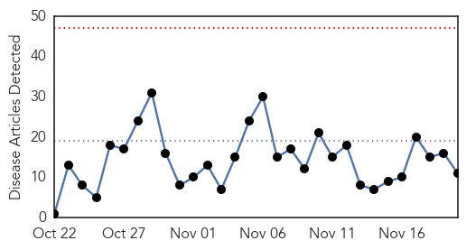
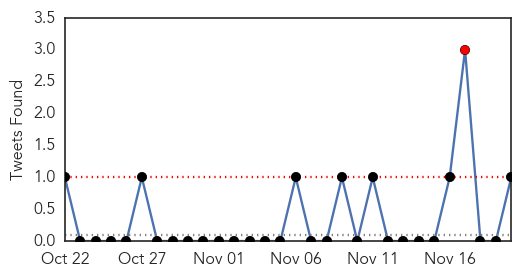
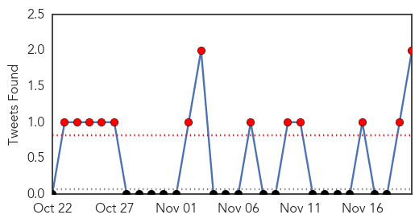

Influenza
30-Day Web Trend
0 alerts, 0 warnings

30-Day Twitter Trend
1 alerts, 0 warnings

Article Locations

Article Confidences

Top Articles:
- 1.000
- Tama County, State Public Health warn of flu dangers - TamaToledoNews.com
- 0.993
- Flu shots advised, but effect is varied
- 0.983
- WHO holds global influenza vaccine conference
- 0.751
- November 20, 2015 Archives
- 0.751
- November 19, 2015 Archives
- 0.751
- November 19, 2015 Archives
- 0.572
- Uber delivers flu shots in 36 cities, in one-day experiment
- 0.572
- Uber delivers flu shots in 36 cities, in one-day experiment
- 0.528
- Final flu clinics wrapping up next week
- 0.523
- Johnson & Johnson
- 0.518
- Health Department holds children flu shot clinic
Top Tweets:
- 0.895
- .@DLHDara Was it a lab confirmed case of flu? Lots of ILIs - influenza-like illnesses - go around in flu season.
Dengue Fever
30-Day Web Trend
0 alerts, 0 warnings

30-Day Twitter Trend
6 alerts, 0 warnings

Article Locations

Article Confidences

Top Articles:
- 0.999
- Mystery virus stalks city in new outbreak
- 0.997
- Big Island of Hawaii hit by mosquito-born Denque Fever
- 0.995
- After floods, there has been no disease outbreak, says state health secretary
- 0.994
- Thegardenisland.com: Local
- 0.994
- 101 cases of dengue fever confirmed on Hawaii Island
- 0.993
- Confirmed Dengue Fever cases rises to 88, info meeting in Spanish tonight (Nov 20)
- 0.984
- Update of number of dengue fever cases
- 0.980
- EDITORIAL: Stop politicizing public health issues
- 0.975
- Researchers Investigate Dengue Virus Transmission
- 0.887
- Sudan: for first time in four years, UN relief agencies visit areas in Central Darfur
- 0.867
- Hawaii Island schools on list of spraying sites near dengue fever cases
- 0.669
- Red Cross calls for blood donations as dengue surges
Top Tweets:
- 0.962
- Flavivirus news: Health Officials Monitoring Dengue Virus - KRGV: KRGVHealth Officials Monitori... https://t.co/3wbkVNgfCO pathogenposse
- 0.636
- Flavivirus news: The number of confirmed dengue fever cases in the state has risen to 79 ... - ... https://t.co/TGtEDEsNYv pathogenposse